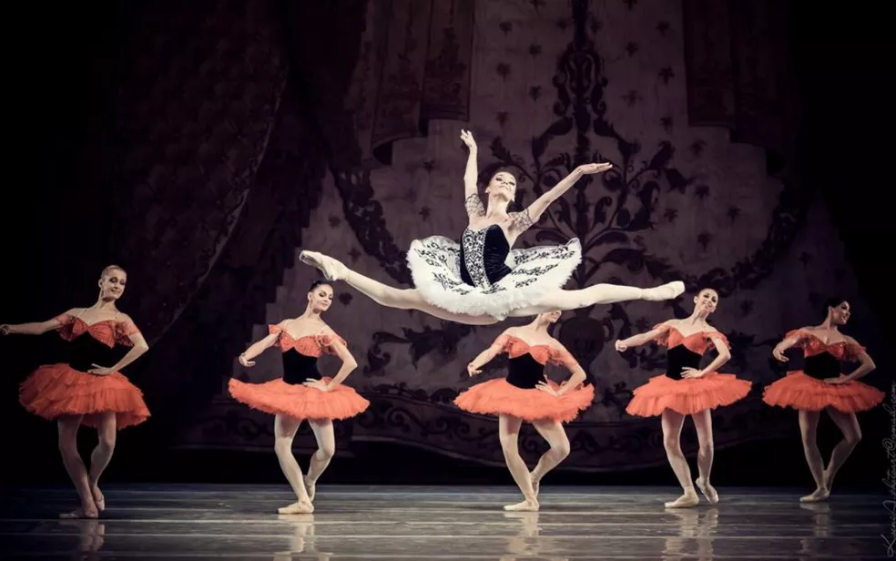
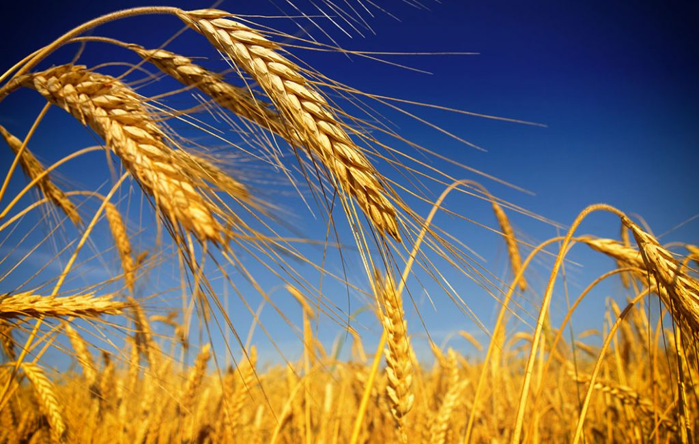
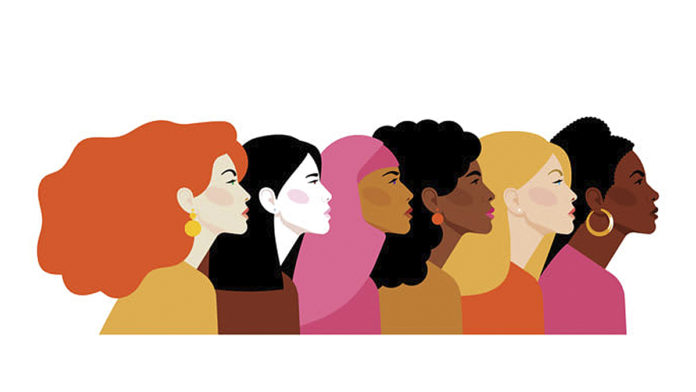
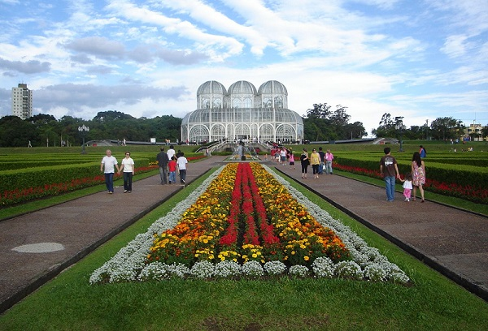

A Ucrânia
A Ucrânia é o maior país totalmente europeu por área terrestre. O território ucraniano está localizado na Europa Oriental e sua história está intimamente relacionada aos povos eslavos que habitam esta parte do planeta. A cultura ucraniana também tem muitas tradições eslavas. Atualmente, a Ucrânia tem cerca de 44 milhões de habitantes e implementa um sistema semipresidencial.
A economia do país é baseada na agricultura e na indústria. Sua infraestrutura é precária. Nos últimos anos, a Ucrânia tem buscado a reconciliação com os países ocidentais da Europa. No entanto, enfrenta resistência do governo russo, que ainda tem forte influência política e cultural sobre o país.
Cultura
A cultura da Ucrânia é bastante representativa dos povos eslavos que habitavam boa parte do Leste Europeu. Os ucranianos são reconhecidos internacionalmente pelas suas tradições culturais, como:
- danças típicas;
- vestimentas coloridas.
No país, a dança é uma tradição e abrange diversos ritmos. O Ballet Nacional da Ucrânia é uma das principais companhias de dança do mundo.
Há também a tradição em trabalhos manuais, como pinturas, bordados e trabalhos em madeira. A confecção de ovos pintados, os pysanka, e de bonecas de madeira, as babuskas, é típica da Ucrânia. Em relação aos hábitos alimentares, a culinária ucraniana faz uso de ingredientes como batata, beterraba e repolho. O bolo e o frango de Kiev são pratos típicos locais. O principal esporte do país é o futebol.
Curiosidades
A bandeira da Ucrânia é formada por duas faixas coloridas: uma azul e outra amarela, representando o céu azul sobre os campos de trigo.
O ano de 1986 ficou marcado na história ucraniana pelo acidente da usina nuclear de Chernobyl.
Há grande discrepância entre o número de homens e mulheres na Ucrânia. O elevado número de mulheres no país é explicado pela alta taxa de mortalidade de homens.
O ato de presentear pessoas com flores é um hábito tipicamente ucraniano. As flores são um importante símbolo da cultura do país.
O Paraná, estado da região Sul do Brasil, concentra muitos ucranianos que emigraram para o território brasileiro no último século.
